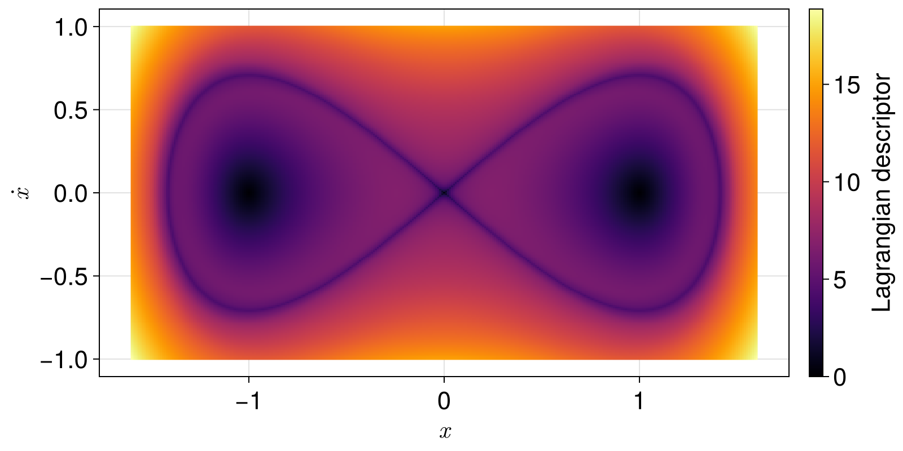
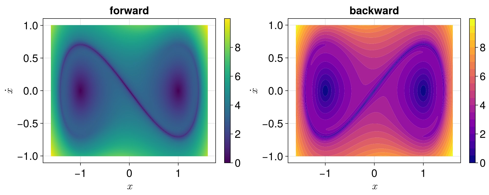
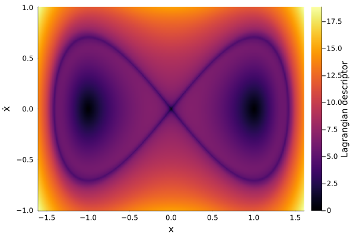
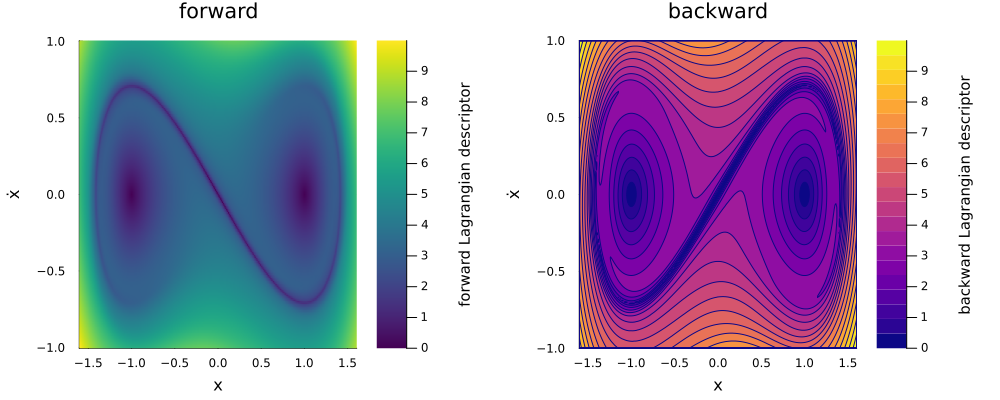
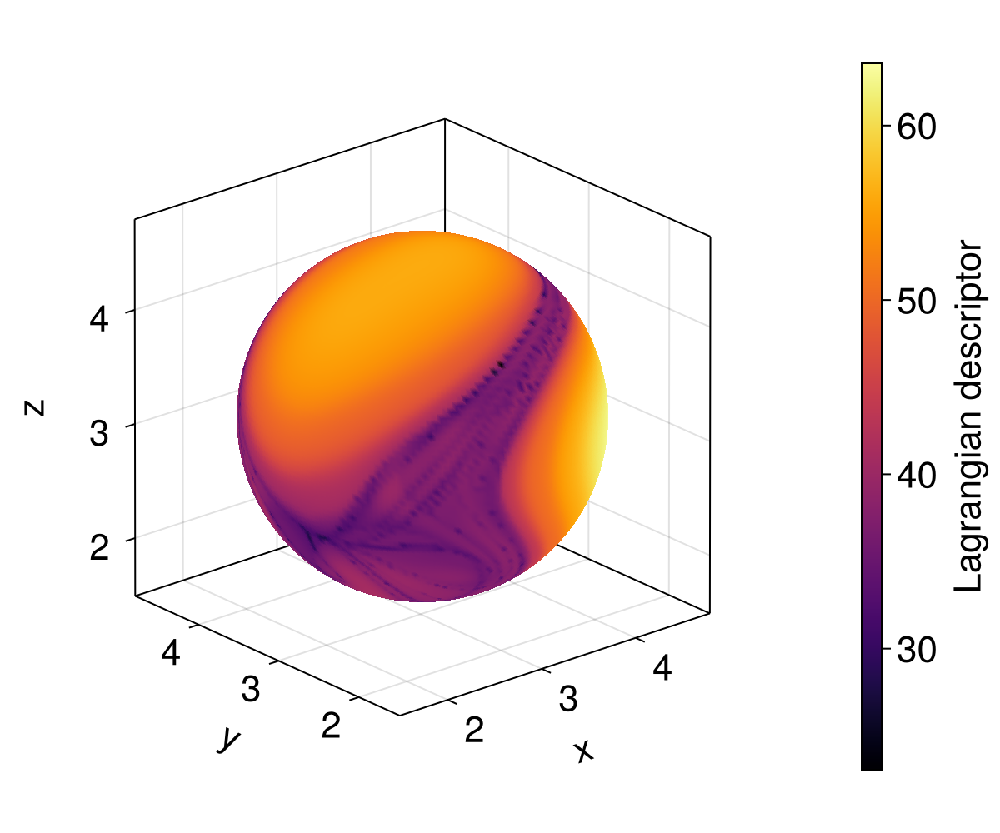
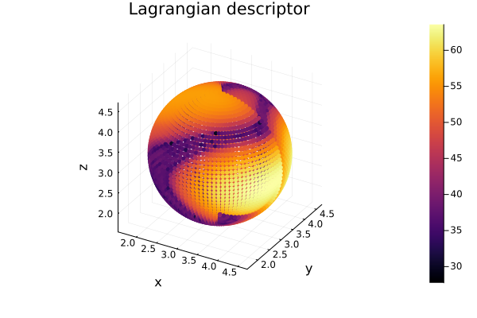

Plotting
A LagrangianDescriptorSolution can be plotted with Makie.jl, through a package extension that is loaded together with Makie, or with Plots.jl, through a plot recipe. The rest of this documentation uses Makie, as the other packages of JuliaDynamics do, but both give the same kinds of plots, with the same arguments.
What is plotted
plot(lagsol) # the default direction
plot(lagsol, :forward) # a given direction
plot(lagsol; idxs = (1, 3)) # components 1 and 3 of the initial conditions
plot(lagsol; idxs = (1, 2, 3)) # a three-dimensional plot of components 1, 2 and 3The direction can be :forward, :backward, :both or :total (the sum of both, the default for a problem with both directions), or :difference (forward minus backward). When solved with several realizations, the mean over the realizations is plotted. The kind of plot depends on the collection uu0 of initial conditions. In two dimensions:
- numbers (scalar problems), or vectors with a single component: a line with the Lagrangian descriptor at each initial condition;
- a matrix of vectors forming a grid in the components
idxs, in either layout,[[x, y] for y in ys, x in xs]or[[x, y] for x in xs, y in ys]: a heatmap; - any other collection of vectors (scattered points, a curve, a matrix not forming a grid, ...): a scatter plot of the components
idxsof the initial conditions, colored by the Lagrangian descriptor.
The keyword idxs, with default (1, 2), chooses the two components of the initial conditions plotted, e.g. for a two-dimensional slice of initial conditions of a higher-dimensional system. With three components, the plot is three-dimensional; see Three-dimensional plots.
The colormap is :inferno by default, with both Makie and Plots.
As an example, we use the Lagrangian descriptors of the Duffing equation $\ddot x = x - x^3$, on a grid of initial conditions.
With Makie
using OrdinaryDiffEq, CairoMakie
using LinearAlgebra: norm
using LagrangianDescriptors
function f!(du, u, p, t)
x, y = u
du[1] = y
du[2] = x - x^3
end
prob = ODEProblem(f!, [0.0, 0.0], (0.0, 5.0))
M(du, u, p, t) = norm(du)
uu0 = [[x, y] for y in range(-1.0, 1.0, length = 201), x in range(-1.6, 1.6, length = 321)]
lagsol = solve(LagrangianDescriptorProblem(prob, M, uu0), Tsit5())
fig, ax, plt = heatmap(lagsol; axis = (xlabel = L"x", ylabel = L"\dot{x}"))
Colorbar(fig[1, 2], plt; label = "Lagrangian descriptor")
fig
Any compatible plot function can be used, with the usual Makie attributes, e.g. a given direction, with a different colormap, and filled contours:
fig = Figure(size = (1000, 400))
ax = Axis(fig[1, 1]; title = "forward", xlabel = L"x", ylabel = L"\dot{x}")
plt = heatmap!(ax, lagsol, :forward; colormap = :viridis)
Colorbar(fig[1, 2], plt)
ax = Axis(fig[1, 3]; title = "backward", xlabel = L"x", ylabel = L"\dot{x}")
plt = contourf!(ax, lagsol, :backward; levels = 20, colormap = :plasma)
Colorbar(fig[1, 4], plt)
fig
The default colormap of the package takes precedence over a colormap set with Makie's set_theme!, so another colormap is given with colormap = ... in each call.
With Plots
using OrdinaryDiffEq, Plots
using LinearAlgebra: norm
using LagrangianDescriptors
function f!(du, u, p, t)
x, y = u
du[1] = y
du[2] = x - x^3
end
prob = ODEProblem(f!, [0.0, 0.0], (0.0, 5.0))
M(du, u, p, t) = norm(du)
uu0 = [[x, y] for y in range(-1.0, 1.0, length = 201), x in range(-1.6, 1.6, length = 321)]
lagsol = solve(LagrangianDescriptorProblem(prob, M, uu0), Tsit5())
plot(lagsol; xlabel = "x", ylabel = "ẋ")
Any series type and the usual Plots attributes can be used, e.g. a given direction, with a different colormap, and filled contours:
plot(
plot(lagsol, :forward; title = "forward", color = :viridis),
plot(lagsol, :backward; title = "backward", seriestype = :contourf, levels = 20, color = :plasma);
layout = (1, 2), size = (1000, 400), margin = 5Plots.mm, xlabel = "x", ylabel = "ẋ",
)
With Plots, the colormap can also be changed for all plots with Plots.default(color = :viridis).
Three-dimensional plots
With three components in idxs, e.g. idxs = (1, 2, 3), the plot is three-dimensional, in these components of the initial conditions:
- a matrix of initial conditions is seen as a parametrized surface, not necessarily a plane, and drawn as a surface colored by the Lagrangian descriptor;
- any other collection of initial conditions is drawn as a three-dimensional scatter plot, colored by the Lagrangian descriptor.
With Plots, both are drawn as three-dimensional scatter plots, since GR, the default backend of Plots, does not color a parametrized surface by other values.
As an example, we use the Arnold–Beltrami–Childress (ABC) flow, a steady three-dimensional flow with chaotic regions, on a sphere of initial conditions:
using OrdinaryDiffEq, CairoMakie
using LinearAlgebra: norm
using LagrangianDescriptors
function abc!(du, u, p, t)
A, B, C = p
x, y, z = u
du[1] = A * sin(z) + C * cos(y)
du[2] = B * sin(x) + A * cos(z)
du[3] = C * sin(y) + B * cos(x)
end
prob = ODEProblem(abc!, zeros(3), (0.0, 10.0), (sqrt(3), sqrt(2), 1.0))
M(du, u, p, t) = norm(du)
# a sphere of radius 1.5 around (π, π, π), parametrized by the angles θ and φ
sphere(θ, φ) = [π + 1.5sin(θ) * cos(φ), π + 1.5sin(θ) * sin(φ), π + 1.5cos(θ)]
uu0 = [sphere(θ, φ) for θ in range(0, π, length = 101), φ in range(0, 2π, length = 201)]
lagsol = solve(LagrangianDescriptorProblem(prob, M, uu0), Tsit5())
fig, ax, plt = plot(lagsol; idxs = (1, 2, 3), figure = (size = (600, 500),),
axis = (xlabel = "x", ylabel = "y", zlabel = "z", aspect = :data, viewmode = :fit))
Colorbar(fig[1, 2], plt; label = "Lagrangian descriptor")
fig
With Makie, the surface is drawn without lighting, so that its colors are those of the colorbar; shading = true turns the lighting on. Several solutions can be drawn on the same axis, e.g. with plot!(ax, lagsol; idxs = (1, 2, 3)) on an Axis3. The colors of each are scaled separately, unless a common colorrange is given. CairoMakie draws each plot over the previous ones, so intersecting surfaces are split at their intersection and drawn from the farthest to the nearest, as in the Lorenz system example; GLMakie and WGLMakie hide the parts behind by themselves.
With Plots, the same sphere, with fewer initial conditions, gives a scatter plot:
using OrdinaryDiffEq, Plots
using LinearAlgebra: norm
using LagrangianDescriptors
function abc!(du, u, p, t)
A, B, C = p
x, y, z = u
du[1] = A * sin(z) + C * cos(y)
du[2] = B * sin(x) + A * cos(z)
du[3] = C * sin(y) + B * cos(x)
end
prob = ODEProblem(abc!, zeros(3), (0.0, 10.0), (sqrt(3), sqrt(2), 1.0))
M(du, u, p, t) = norm(du)
sphere(θ, φ) = [π + 1.5sin(θ) * cos(φ), π + 1.5sin(θ) * sin(φ), π + 1.5cos(θ)]
uu0 = [sphere(θ, φ) for θ in range(0, π, length = 51), φ in range(0, 2π, length = 101)]
lagsol = solve(LagrangianDescriptorProblem(prob, M, uu0), Tsit5())
plot(lagsol; idxs = (1, 2, 3), title = "Lagrangian descriptor", xlabel = "x", ylabel = "y", zlabel = "z", markersize = 3)
With both
If both Plots and Makie are loaded, their plotting functions must be qualified, e.g. Makie.heatmap(lagsol) or Plots.plot(lagsol).